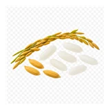

होम / चावल

चावल का भाव आज | Rice Mandi Price Today
चावल के आज के उपलब्ध मंडी भाव देखें—रामगंज मंडी, शाहाबाद और फतेहाबाद के मॉडल, न्यूनतम और अधिकतम रेट।
नीचे मंडी-वार सूची में चावल के उपलब्ध भाव दिए हैं। मंडी के नाम पर क्लिक करके उस मंडी की दूसरी फसलों के भाव भी देख सकते हैं।
चावल का भाव कैसे देखें और रेट किन बातों से बदलता है
चावल धान से अलग, मिलिंग के बाद का उत्पाद है। इसलिए धान के भाव या MSP को चावल के मंडी भाव का सीधा विकल्प नहीं मानना चाहिए।
आज का चावल भाव कैसे देखें
चावल में उपलब्ध record देखते समय variety, grain length, टूटे दाने और grade जरूर मिलाएँ। धान की table या paddy record से चावल का मूल्य अनुमानित न करें।
- अपनी मंडी या राज्य चुनकर भाव देखें।
- न्यूनतम, मॉडल और अधिकतम भाव में अंतर समझें।
- पुराने और नए उपलब्ध रिकॉर्ड में फर्क देखकर निर्णय लें।
गुणवत्ता और ग्रेड का असर
चावल की किस्म, दाने की लंबाई, टूटे दानों का अनुपात, रंग, polish और सफाई grade तय कर सकते हैं। अलग प्रकार के rice का भाव अलग होता है।
आवक, मांग और बाजार
मिलिंग, थोक खरीद, पैकिंग और seasonal supply चावल के व्यापार को प्रभावित कर सकते हैं। उपलब्ध record कम हों तो एक भाव को पूरे बाजार का मानक न समझें।
चावल बेचने या खरीदने से पहले ध्यान रखें
- धान और चावल के भाव अलग-अलग देखें।
- किस्म और broken grade पूछकर ही तुलना करें।
- कम records होने पर नज़दीकी व्यापारी या मंडी से अतिरिक्त पुष्टि लें।